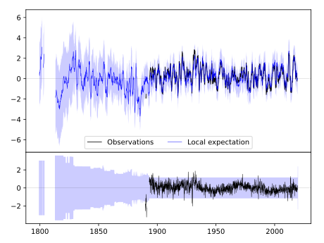
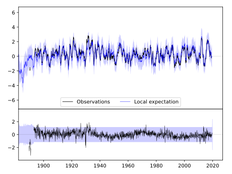
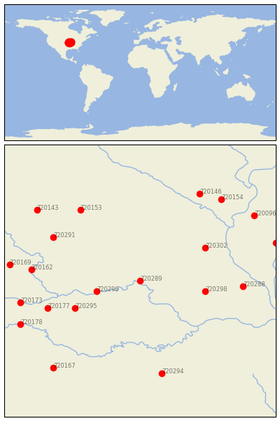

BRUNSWICK [USA]


| Neighbour | Name | Country | Distance | Lon/Lat | Years |
|---|
| 720289 | BRUNSWICK | USA | 0 | -93.1, 39.4 | 1889-2019 |
| 720296 | LEXINGTON 3E | USA | 72 | -93.9, 39.2 | 1878-2019 |
| 720298 | MEXICO | USA | 105 | -91.9, 39.2 | 1892-2019 |
| 720295 | LEES SUMMIT REED WR | USA | 117 | -94.3, 38.9 | 1863-2019 |
| 720302 | STEFFENVILLE | USA | 122 | -91.9, 40.0 | 1893-2019 |
| 720177 | OLATHE 3E | USA | 156 | -94.8, 38.9 | 1864-2019 |
| 720291 | CONCEPTION | USA | 163 | -94.7, 40.2 | 1888-2019 |
| 720288 | BOWLING GREEN 1 E | USA | 163 | -91.2, 39.3 | 1883-2019 |
| 720153 | MT AYR | USA | 172 | -94.2, 40.7 | 1892-2019 |
| 720162 | ATCHISON | USA | 173 | -95.1, 39.6 | 1865-2019 |
| 720294 | LEBANON 2W | USA | 192 | -92.7, 37.7 | 1890-2019 |
| 720173 | LAWRENCE | USA | 194 | -95.3, 39.0 | 1868-2019 |
| 720146 | FAIRFIELD | USA | 200 | -92.0, 41.0 | 1855-2019 |
| 720169 | HORTON | USA | 208 | -95.5, 39.7 | 1888-2019 |
| 720178 | OTTAWA | USA | 209 | -95.3, 38.6 | 1893-2019 |
| 720154 | MT PLEASANT 1 SSW | USA | 209 | -91.6, 40.9 | 1863-2019 |
| 720143 | CLARINDA | USA | 216 | -95.0, 40.7 | 1872-2019 |
| 720096 | LA HARPE | USA | 223 | -91.0, 40.6 | 1893-2019 |
| 720167 | FT SCOTT | USA | 225 | -94.7, 37.8 | 1843-2019 |
| 720109 | RUSHVILLE | USA | 227 | -90.6, 40.1 | 1889-2019 |